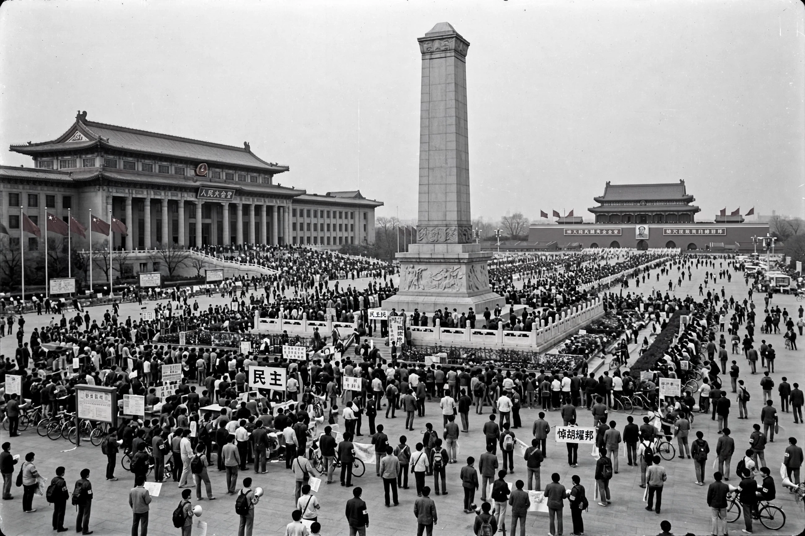

The 1989 Tiananmen Square protests and massacre, also known as the June Fourth Incident, were student-led demonstrations held in Tiananmen Square in Beijing, China, ending in a military crackdown on the night of 3–4 June 1989.

| Tiananmen Square protests | |
|---|---|
| Date | 15 April – 4 June 1989 |
| Location | Beijing, China |
| Goals | Democracy, free press, end corruption |
| Result | Military suppression |
Sparked by the death of reformist leader Hu Yaobang, students occupied the square for weeks, joined by workers and citizens. Hunger strikes followed failed dialogue.
Martial law was declared on 20 May; PLA troops moved in overnight, killing hundreds to thousands — estimates vary widely due to censorship. The event is heavily censored in China; vigils in Hong Kong were banned after the 2020 national security law.
Recreated from memory; casualty figures remain disputed under censorship.